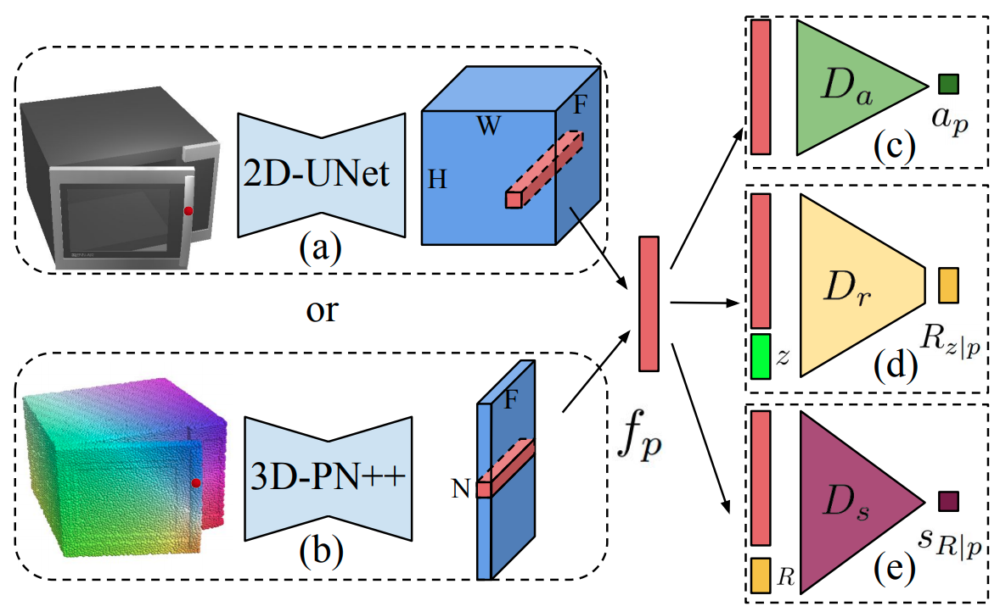

semantic acvitation
语义激活思路来源
- point set generation (fixed length)
- point cloud generation (from distribution to distribution)
- continuous function representation (sampling)
- continuous function representation (ray tracing)
- iso-surface / parametric generation / generative / GAN
- implicit field/feature semantic information
- NeRF 引用中带label
- semantic envelope
- semantic activated surface / interface area
- keyword
- image segmentation
- (implicit function) isosurface extraction
- isosurface + GAN ?
- differentiable + isosurface ?
- semantic + isosurface ?
-
point-based representation
- point set generation network (大多是auto-decoder结构，输出固定个数的点)
- point cloud generation (GAN)
- implicit field/feature + semantic information
- sitzmann inferring semantic 被引
point set generation (fixed length)
<r-GAN, l-GAN> <PC-GAN> "learning representations and generative models for 3d point clouds"
[ ICLR2018 ] [paper] [[code]] [ 
University ] [ 
company ]
[ xxxx ]
[ abcd ]
Click to expand
-
评价
- 使用了全连接层；由于全连接层在生成有结构的数据时有困难，因此难以产生带有多样性的真实形状
- Motivation
- 主要构成
- Raw point cloud GAN (r-GAN) 产生raw \(2048 \times 3\) point set 输出
- generator从高斯噪声vector产生 \(2048 \times 3\) 点云集输出
- discriminator使用正常的auto encoder，直接输入raw point cloud
- Latent-space GAN (l-GAN)
- 首先预训练一个pre-trained AE，然后generator和discriminator 都在这个pretrained AE的 bottle-neck variables 操作
- Raw point cloud GAN (r-GAN) 产生raw \(2048 \times 3\) point set 输出
"A Point Set Generation Network for 3D Object Reconstruction from a Single Image"
[ 2016 ] [paper] [code] [ 
Tsinghua, Stanford ]
[ Haoqiang Fan, Hao Su, Leonidas Guibas ]
[ point set generation ]
Click to expand
- Motivation
<DPC> "Unsupervised Learning of Shape and Pose with Differentiable Point Clouds"
[ 2018 ] [paper] [[code]] [ 
MPI ] [ 
Intel ]
[ Eldar Insafutdinov, Alexey Dosovitskiy ]
[ abcd ]
Click to expand
-
Motivation
- from unlabeled category-specific images to 3D shape + camera pose
- 直接用MLP输出点云集
point cloud generation (from distribution to distribution)
<tree-GAN> "3D Point Cloud Generative Adversarial Network Based on Tree Structured Graph Convolutions"
[ ICCV2019 ] [paper] [supp] [code] [ 
(Korea)Chung-Ang University ]
[ Dong Wook Shu, Sung Woo Park, Junseok Kwon ]
[ abcd ]
Click to expand
-
Motivation

- tree结构的GCN

[image-to-point cloud] Geometric adversarial loss for single-view 3D-object reconstruction
[point cloud-to-point cloud] Point cloud auto-encoder via deep grid deformation.
GANS:
[40] 使用图卷积+GAN；邻接矩阵的计算太复杂，要平方计算
continuous function representation (sampling)
- occupancy networks: 多分辨率等值面提取技术
continuous function representation (ray tracing)
- DVR
iso-surface / parametric generation / generative / GAN
implicit field/feature semantic information
<semantic-SRN> "Inferring Semantic Information with 3D Neural Scene Representations"
[ 3DV 2020 ] [web] [paper] [ 
Stanford ]
[ Amit Kohli, Vincent Sitzmann, Gordon Wetzstein ]
[ multi-modal features, semi-supervision ]
Click to expand
-
Motivation
- 证明像SRN这样的隐式神经表征也可以包含多模态的信息：外观，形状，语义，etc.
- OverView
-
- [训练] 正常的类别物体SRN预训练
- [训练] 固定SRN的参数和RGB neural renderer，在已经固定的SRN feature上利用少量的监督数据(如文中只用了30张语义标注好的RGB图片) 训练一个额外的语义分类器
- [测试] 单张RGB图片 ==and/or== 单张标注好的语义图片，提取code
- 注意这里的and/or：训练的时候RGB和语义监督信号都有，测试的时候只需要二者之一就足够，不一定全都要
- [测试] 利用第3步提取好的code在更多camera view下render出RGB和语义

NeRF 引用中带label
暂无
semantic envelope
"Neural Cages for Detail-Preserving 3D Deformations"
[ CVPR2020(Oral) ] [paper] [code] [web] [web] [ 
ETH, IIT Bombay ] [ 
Adobe ]
[ Wang Yifan, Noam Aigerman, Vladimir G. Kim, Siddhartha Chaudhuri, Olga Sorkine-Hornung ]
[ cage-based deformation, pointnet encoder, deformation ]
Click to expand
-
Motivation

- deformation一般都会有两组互相矛盾的目标函数
- alignment with the target 和目标对齐
- adhering to quality metrics 比如最小的扭曲，保留局部几何细节
- 过去有一些手动的方法，但是往往局限于具体的表面
- 过去也有一些神经网络-based方法，预测所有顶点的new positions
- 但是由于神经网络难以捕捉、保留、产生高频的特征
- 本篇通过借助一种传统的几何处理技术：
cage-based deformations(CBD)，来circumvent上述问题- Harmonic coordinates for character articulation, Pushkar Joshi et al., 2007
- Mean value coordinates for closed triangular meshes. Tao Ju et al., 2005
- Green coordinates. Yaron Lipman et al., 2008
-
Overview
- 不直接变形surface，而是变形稀疏笼子；
surface上面的每个点都有笼子顶点的加权和表达，权重函数不变，通过变形笼子来变形surface
这样可以最大程度保留局部细节，相当于直接扭曲空间，而不是移动surface vertices
- 不直接变形surface，而是变形稀疏笼子；
-
results
- deformation transfer
- deformation transfer
-
cage-based deformations CBD
-
intuition
- instead of 单独变形表面上的那些点，CBD 直接 warp 整个surface 嵌入到的那个ambient space
- CBD通过控制一个稀疏的triangle mesh: \(cage \; \mathcal{C}\)控制这个warping
- 在给定一个cage后，ambient space中的任意一点\(\boldsymbol{\rm p}\in\mathbb{R}^3\) 被一组
generalized barycentric coordinates编码，即通过cage顶点\(\boldsymbol{\rm v}_j\)的加权平均来表达：
\(\boldsymbol{\rm p}=\sum \phi^{\mathcal{C}}_j(\boldsymbol{\rm p}) \boldsymbol{\rm v}_j\)
其中权重函数\(\{ \phi^{\mathcal{C}}_j \}\) 依赖于\(\boldsymbol{\rm p}\) 相对于cage 顶点\(\{\boldsymbol{\rm v}_j\}\)的相对位置 - 通过简单地offset cage的顶点，然后再用pre-computed weights去计算ambient space中的任意一点新坐标\(\boldsymbol{\rm v}_j'\)，就可以实现变形
\(\boldsymbol{\rm p}'=\underset {0 \leq j \lt \lvert V_{\mathcal{C}}\rvert }{\sum} \phi^{\mathcal{C}}_j(\boldsymbol{\rm p}) \boldsymbol{\rm v}_j'\)
注意上式中的权重函数\(\{ \phi^{\mathcal{C}}_j \}\)还是之前计算好的，即权重函数不变，只有笼子顶点变了
- 在给定一个cage后，ambient space中的任意一点\(\boldsymbol{\rm p}\in\mathbb{R}^3\) 被一组
- attain weight functions
- 过去CBD领域构造了很多规则来获取带有各种特殊属性的权重函数，比如补间、线性精度、平滑和最小的扭曲；
- 本文选择了
mean value coordinates(MVC) ，因为他们的方法补间属性很好，并且简洁、对source cage顶点和deformed cage顶点可微
-
intuition
-
learning：如何改成learning based CBD
- 目标是end-to-end pipeline，所以训练网络去预测source cage和target cage
- cage-prediction model \(\mathcal{N}_{\mathcal{C}}\)：给定一个source shape\(\mathcal{S}_{\mathcal{s}}\)，预测它的cage \(\mathcal{C}_{\mathcal{s}}\)
- \[\mathcal{C}_{\mathcal{s}}=\mathcal{N}_{\mathcal{C}}(\mathcal{S}_{\mathcal{s}})+\mathcal{C}_0\]
- deformation-prediction model \(\mathcal{N}_{d}\)，预测从\(\mathcal{C}_{\mathcal{S}}\)的offset，来获得deformed cage
- \[\mathcal{C}_{\mathcal{s}\rightarrow t}=\mathcal{N}_{d}(\mathcal{S}_{t},\mathcal{S}_{\mathcal{s}})+\mathcal{C}_{\mathcal{s}}\]
- source shape提输入点云的pointNet feature，decode预测source cage
source net的pointNet feature和target shape的pointNet feature拼一起，decode预测deformed cage
source cage通过MVC得到source shape的权重函数，然后用CBD变形得到deformed shape
-
losses
- 主要分三项
- 最优化source cage，鼓励正的mean value coordinates；就是惩罚负的MVC坐标（相当于让surface一定在笼子里）
- 最优化变形：衡量和目标对齐；就是chamfer distance
- 最优化变形：衡量shape细节保留
- shape细节保留
- 来自Laplacian regularization 的灵感，让形状更平滑
- 对于man-made shapes，使用两个额外的loss来学到这类人工制品的形状的先验
- normal consistency：法向量一致性
保留平面元素，比如桌面
惩罚deformation后的PCA-normal
有效提升了感知的质量 - 类似 3DN: 3D deformation network. Wang et al. CVPR2019，使用对称性loss：衡量形状和它在x=0平面的镜像的chamfer distance
- normal consistency：法向量一致性
- 主要分三项

semantic activated surface / interface area
"Where2Act: From Pixels to Actions for Articulated 3D Objects"
[ arXiv2021 ] [paper] [code] [web] [ 
Stanford ] [ 
Facebook ]
[ Kaichun Mo, Leonidas Guibas, Mustafa Mukadam, Abhinav Gupta, Shubham Tulsiani ]
[ category extrapolation ]
Click to expand
-
Motivation
- 对于带关节的物体，infer哪里去操作；
-
 可以做 category extrapolation！infer不在训练类别外的类别的操作面！
可以做 category extrapolation！infer不在训练类别外的类别的操作面！
-
Overview
- 